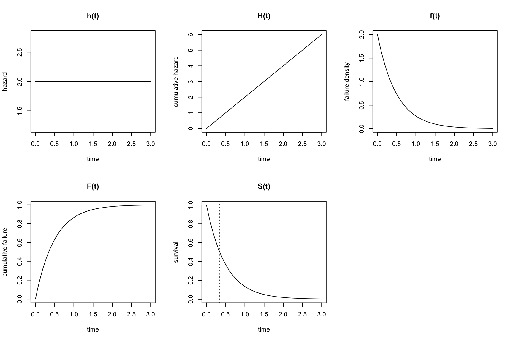
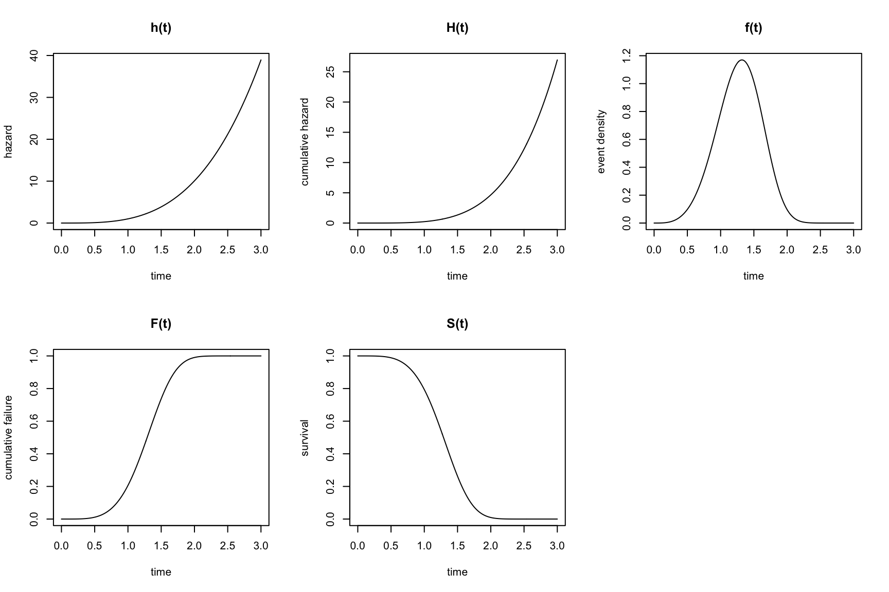
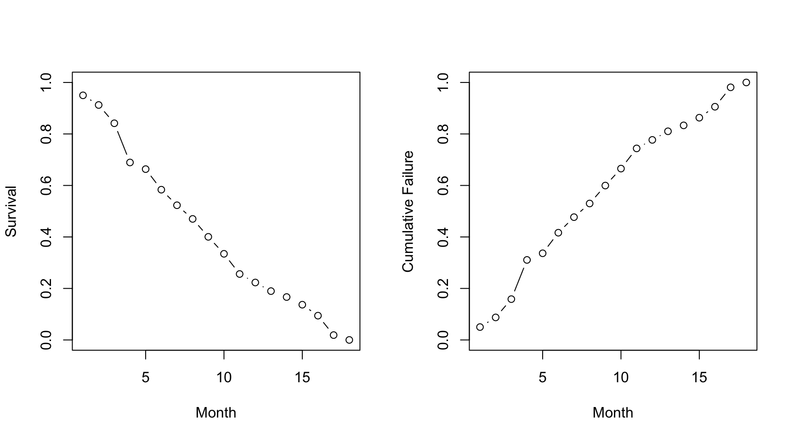
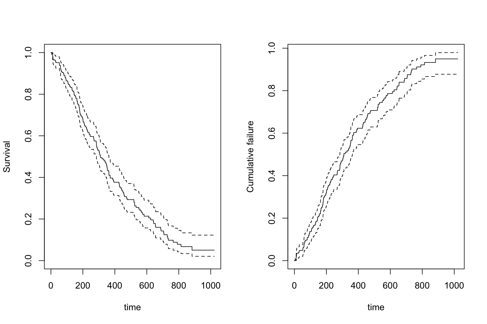
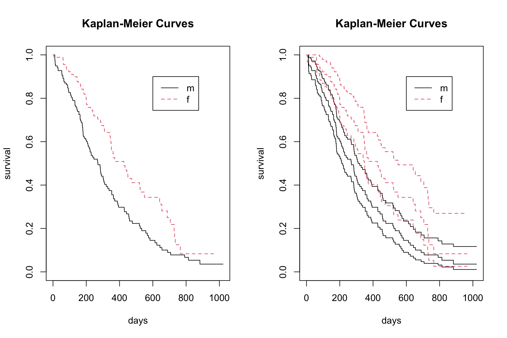
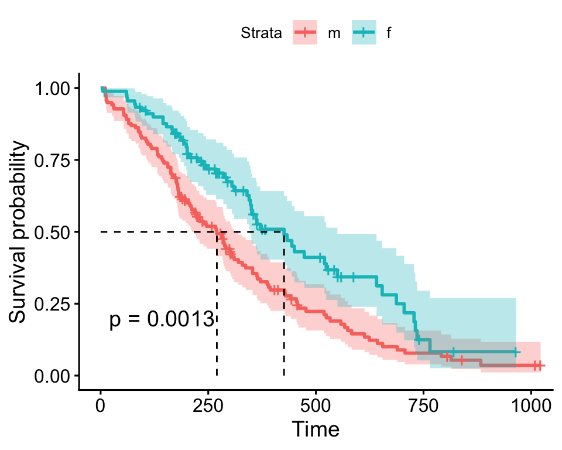

11 Einführung in die Überlebensanalyse
Die Survival-Analyse ist ein statistisches Verfahren, das sich mit der Analyse der Zeit bis zu einem bestimmten Ereignis, oft als Überlebenszeit (Time to event) bezeichnet, beschäftigt. Solche Ereignisse können unterschiedlich sein, wie z. B.
- der Tod
- das Auftreten einer Krankheit
- das Versagen eines technischen Systems
Wichtige Konzepte sind
- die Überlebensfunktion, die angibt, wie wahrscheinlich es ist, dass ein Individuum oder Einheit bis zu einem bestimmten Zeitpunkt überlebt.
- die Hazardrate als das momentane Risiko, dass ein Ereignis genau zu einem bestimmten Zeitpunkt eintritt, unter der Bedingung, dass es bis dahin nicht eingetreten ist.
Die Survival-Analyse wird häufig in der Medizin, Biologie und Technik eingesetzt.
11.1 Notation
- \(\Pr()\): Wahrscheinlichkeit eines Ereignisses
- \(T\): Überlebenszeit, Time-to-event
- \(f(t)\): Ereignis- oder Ausfalldichte
- \(F(t)\): kumulative Verteilungsfunktion
- \(S(t)\): Überlebensfunktion oder Surivor-Funktion
- \(h(t)\): Hazard-Funktion, Inzidenzrate, force of transition
- \(H(t)\): Kumulierte Hazard
11.2 Lernziele
Important
Sie können den Unterschied zwischen Hazard und Survival erklären.
Sie können Sterbetafeln interpretieren.
Sie können mit den Funktionen
Surv()undsurvfit()aus dem PaketsurvivalÜberlebenstabellen für eine oder zwei Gruppen erstellen und diese interpretieren.Sie können die Überlebenskurve für eine oder zwei Gruppen graphisch darstellen.
Sie können mit der Funktion
survdiff()prüfen, ob sich die Überlebenskurven von zwei Gruppen statistisch unterscheiden.
11.3 Survivor Funktion
Sei \(T\) eine Zufallsvariable, die die Wartezeit bis zum Eintreten eines Ereignisses darstellt. Die Wahrscheinlichkeit, dass die Überlebenszeit \(T\) kleiner oder gleich \(t\) ist, wird notiert als
\[ F(t) = \Pr(T \leq t). \]
\(F(t)\) stellt die kumulative Verteilungsfunktion von \(T\) dar. \(f(t) = \frac{\mathrm{d}F(t)}{\mathrm{d}t}\) ist die Ereignisdichte. Die Überlebensfunktion \(S(t)\) ist das Komplement von \(F(t)\), also die Wahrscheinlichkeit, dass die Überlebenszeit grösser als \(t\) ist:
ImportantSurvivor-Funktion
\[ \large S(t) = 1 - F(t) = \Pr(T > t) \]
11.3.1 Hazard Funktion
Die zentrale Grösse ist nun die hazard function \(h(t)\). Dies stellt eine Inzidenzrate oder force of transition dar. Die Hazard beschreibt den Übergang vom Zustand “lebend” zum Zustand “tot”.
\[ \large \text{"Lebend"} \boxed{0} \xrightarrow{\color{red}{h(t)}} \boxed{1} \text{"Tot"} \]
Die Hazard ist definiert als:
\[ \large h(t) = \lim_{\Delta t \to 0} \frac{\Pr(t \leq T < t + \Delta t \mid T \geq t)}{\Delta t} \]
Erklärung:
- Bedingung „Überlebt bis t“
Wir betrachten nur Individuen, die bis zum Zeitpunkt \(t\) nicht das Ereignis erlebt haben, \(T \geq t\). - Wahrscheinlichkeit im kleinen Intervall, \(\Pr(t \leq T < t + \Delta t \mid T \geq t)\). Dies ist die bedingte Wahrscheinlichkeit, dass das Ereignis im Intervall \([t, t+\Delta t)\) eintritt, gegeben, dass es bis \(t\) nicht eingetreten ist.
- Normierung durch Intervallbreite: \(\frac{\Pr(\cdot)}{\Delta t}\). Damit erhalten wir eine Rate pro Zeiteinheit, nicht eine absolute Wahrscheinlichkeit.
- Grenzwert für \(\Delta t \to 0\): \(\lim_{\Delta t \to 0}\). Der Grenzwert macht die Rate instantan: Wir messen das Risiko „sofort nach \(t\)“.
Hazards stellen eine momentane Übergangskraft dar. Hazards sind natürliche Quantitiäten im Umgang mit Time-to-event Daten. Man kann obige Hazard Funktion auch schreiben als Hazard zum Zeitpunkt \(t\) multipliziert mit der Länge eines sehr kleinen Zeitintervalls:
ImportantHazard
\[ \Large h(t) \, \mathrm{d}t = \Pr(T \in \mathrm{d}t \mid {T \geq t}) \]
Das ist die Wahrscheinlichkeit, dass ein Ereignis in einem sehr kleinen Zeitintervall d\(t\) eintritt, unter der Bedingung, dass die Person bis kurz vor \(t\) ereignisfrei war.
Die kumulative Hazard ist die integrierte Hazardfunktion, also die kumulierte Hazard über die Zeit:
\[ H(t) = \int_0^t h(u) \, \mathrm{d}u \]
Der Anstieg der Hazard zwischen zwei Zeitpunkten \(t_1\) und \(t_2\) ist:
\[ \Delta H(t) = H(t_2) - H(t_1) = \int_{t_1}^{t_2} h(u) \, \mathrm{d}u \]
Wenn \(t_1\) nah bei \(t_2\) liegt, dann gilt \(\Delta H(t) \approx h(t) \Delta t\), wobei \(\Delta t = t_2 - t_1\) ist.
11.3.2 Zensierte Daten
Ein fast universelles Merkmal von Überlebensdaten ist die Zensierung. Die häufigste Form ist die Rechtszensierung. Dabei endet der Beobachtungszeitraum oder eine Person wird aus der Studie entfernt, bevor das Ereignis eintritt. Beispielsweise sind manche Personen am Ende einer klinischen Studie noch am Leben oder scheiden aus der Studie aus anderen Gründen als Tod vorzeitig aus.
Man kann zeigen, dass zufällige Zensierung die Hazardfunktion nicht beeinflusst.
11.3.3 Zusammenhang zwischen den Grössen
Die Hazardfunktion \(h(t)\), die kumulative Hazard \(H(t)\), die Überlebensfunktion \(S(t)\), die Ausfallsdichte \(f(t)\) und die kumulative Ausfallfunktion \(F(t)\) sind miteinander verknüpft.
Wir nehmen die Zusammhänge ohne Beweise zur Kenntnis (aber diejenigen, die in der Schule gerne abgeleitet und integriert haben, können es versuchen). Es gilt:
\[ \begin{aligned} h(t) &= \frac{f(t)}{S(t)}= -\frac{\mathrm{d}}{\mathrm{d}t} \mathrm{log} S(t)\\ \\ S(t) &= \exp(-H(t))\\ \\ F(t) &= 1 - \exp(-H(t))\\ \\ \mathrm{log} H(t) &= \mathrm{log} (-\mathrm{log} S(t)) \end{aligned} \]
Mit diesen Zusammenhängen werden wir im nächsten Abschnitt Beispiele anschauen für verschiedene Hazardfunktionen \(h(t)\).
11.3.4 Konstanter Hazard über die Zeit
Die einfachste Überlebensverteilung ergibt sich bei konstantem Hazard über die Zeit. Ein Beispiel für konstanten Hazard wäre der Zerfall von radioaktiven Atomen.
- \(h(t) = \lambda\) ist konstant.
- \(H(t) = \lambda t\)
- \(S(t) = \exp(-\lambda t)\).
- \(F(t) = 1 - \exp(-\lambda t)\).
- \(f(t) = \lambda \exp(-\lambda t)\).
Nehmen wir \(h(t)=\lambda=2\) als Beispiel. Dies entspricht dann der Exponentialverteilung mit (konstanter) Rate \(\lambda=2\),
\[ f(t) = 2 \exp(-2 t). \]
Der Erwartungswert einer Exponentialverteilung ist \(1/\lambda\), hier also 0.5. Der Median einer Exponentialverteilung ist \(\mathrm{log}(2)/\lambda=0.6931472/\lambda=0.3465736\), da
\[ S(t) = \exp(-\lambda t)=0.5 \Rightarrow t=-\mathrm{log}(0.5)/\lambda \Rightarrow t=\mathrm{log}(2)/\lambda \] Das entspricht dann der Halbwertszeit.
In folgender Abbildung sehen wir \(h(t)\), \(H(t)\), \(f(t)\), \(F(t)\) und \(S(t)\) (mit der Halbwertszeit) für \(h(t)=\lambda=2\):
11.3.5 Nicht-konstanter Hazard über die Zeit
Im Allgemeinen ist natürlich der Hazard nicht konstant. In diesem Beispiel betrachten wir eine nicht-konstante Hazardfunktion. Der Hazard hängt z.B. von der Zeit ab gemäss \[ h(t) = t^{\frac{10}{3}} \]
Die folgenden Formeln beschreiben \(h(t), H(t), f(t), F(t)\) und \(S(t)\). Einige erinnern sich vielleicht an die z.T. mühsamen Übungen zum Ableiten und Integrieren an der Mittelschule, wer also Lust hat zum Reproduzieren:
- \(h(t) = t^{\frac{10}{3}}\)
- \(H(t) = \frac{3}{13} t^{\frac{13}{3}}\)
- \(S(t) = \exp\left(-\frac{3}{13} t^{\frac{13}{3}}\right)\)
- \(f(t) = h(t) \cdot S(t)\)
- \(F(t) = 1 - S(t)\)

11.4 Schätzung der Überlebensfunktion
Wir haben jetzt die Survivor-Funktion theoretisch eingeführt. Wie immer, brauchen wir ein empirisches Pendant, ein \(\hat{S}(t)\). Dazu gehören im wesentlichen
- die Sterbetafeln-Methode und
- der Kaplan-Meier Schätzer.
11.4.1 Sterbetafeln
Die Methode der Sterbetafeln (Life Table Method) ist ein klassischer Ansatz zur Schätzung der Überlebensfunktion \(S(t)\). Sie basiert auf einer Einteilung der Zeitachse in Intervalle \(i = 1,\dots, I\) von gleicher Länge. Das Sterberisiko \(r_i\) im Intervall \(i\) wird geschätzt als \[ \hat{r}_i = \frac{\text{Anzahl der Patienten, die im Intervall } i \text{ gestorben sind}}{\text{Anzahl der Patienten, die zu Beginn des Intervalls } i \text{ noch lebten}} = \frac{d_i}{n_i}. \]
Die Überlebensfunktion wird dann geschätzt als: \[ \hat{S}(t) = \prod_{i=1}^t (1 - \hat{r}_i) = (1 - \hat{r}_1) \times \dots \times (1 - \hat{r}_t) \]
Versuche, die Werte in Tabelle 11.1 nachzuvollziehen. Eine Nuance ist, dass die “At risk”-Anzahl alle Überlebenden am Beginn des Intervalls minus 0.5 der zensierten Fälle darstellt.
| Month | AliveBegin | Deaths | Censored | AtRisk | RiskDeath | RiskSurv | Survival |
|---|---|---|---|---|---|---|---|
| 1 | 240 | 12 | 0 | 240.0 | 0.0500000 | 0.9500000 | 0.9500000 |
| 2 | 228 | 9 | 0 | 228.0 | 0.0394737 | 0.9605263 | 0.9125000 |
| 3 | 219 | 17 | 1 | 218.5 | 0.0778032 | 0.9221968 | 0.8415046 |
| 4 | 201 | 36 | 4 | 199.0 | 0.1809045 | 0.8190955 | 0.6892726 |
| 5 | 161 | 6 | 2 | 160.0 | 0.0375000 | 0.9625000 | 0.6634249 |
| 6 | 153 | 18 | 7 | 149.5 | 0.1204013 | 0.8795987 | 0.5835476 |
| 7 | 128 | 13 | 5 | 125.5 | 0.1035857 | 0.8964143 | 0.5231005 |
| 8 | 110 | 11 | 3 | 108.5 | 0.1013825 | 0.8986175 | 0.4700672 |
| 9 | 96 | 14 | 3 | 94.5 | 0.1481481 | 0.8518519 | 0.4004276 |
| 10 | 79 | 13 | 0 | 79.0 | 0.1645570 | 0.8354430 | 0.3345345 |
| 11 | 66 | 15 | 4 | 64.0 | 0.2343750 | 0.7656250 | 0.2561280 |
| 12 | 47 | 6 | 1 | 46.5 | 0.1290323 | 0.8709677 | 0.2230792 |
| 13 | 40 | 6 | 0 | 40.0 | 0.1500000 | 0.8500000 | 0.1896173 |
| 14 | 34 | 4 | 2 | 33.0 | 0.1212121 | 0.8787879 | 0.1666334 |
| 15 | 28 | 5 | 0 | 28.0 | 0.1785714 | 0.8214286 | 0.1368774 |
| 16 | 23 | 7 | 1 | 22.5 | 0.3111111 | 0.6888889 | 0.0942933 |
| 17 | 15 | 12 | 0 | 15.0 | 0.8000000 | 0.2000000 | 0.0188587 |
| 18 | 3 | 3 | 0 | 3.0 | 1.0000000 | 0.0000000 | 0.0000000 |
Die geschätzte Survival \(\hat{S}(t)\) und Kumulative Failure \(\hat{F}(t)\) können wir plotten:

11.4.2 Kaplan-Meier-Schätzer
In vielen Studien ist die exakte Nachbeobachtungszeit für jedes Individuum bekannt, sodass eine Aggregation in vorgegebenen Zeitintervallen vermieden werden kann. Der Kaplan-Meier-Schätzer der Überlebensfunktion nutzt direkt die Zeitpunkte, in denen mindestens ein Ereignis eintritt. Die Anwendung der Lebenszeittabellen-Methode auf diese Intervalle liefert im Wesentlichen den Kaplan-Meier-Schätzer.
Beispiel: Die NCCTG-Lungendaten betreffen das Überleben von Patienten mit fortgeschrittenem Lungenkrebs, gesammelt von der North Central Cancer Treatment Group. Die Leistungspunkte bewerten, wie gut der Patient alltägliche Aktivitäten ausführen kann. Siehe für Code-Book ?survival::lung.
library(survival)inst: Institutiontime: Survival time in daysstatus: censoring status 1=censored, 2=deadage: Age in yearssex: Male=1 Female=2ph.ecog: ECOG performance score as rated by the physician. 0=asymptomatic, 1= symptomatic but completely ambulatory, 2= in bed <50% of the day, 3= in bed > 50% of the day but not bedbound, 4 = bedboundph.karno: Karnofsky performance score (bad=0-good=100) rated by physicianpat.karno: Karnofsky performance score as rated by patientmeal.cal: Calories consumed at mealswt.loss: Weight loss in last six months (pounds)
lung$sex<-factor(lung$sex,levels=c(1,2),labels=c("m","f"))
str(lung)'data.frame': 228 obs. of 10 variables:
$ inst : num 3 3 3 5 1 12 7 11 1 7 ...
$ time : num 306 455 1010 210 883 ...
$ status : num 2 2 1 2 2 1 2 2 2 2 ...
$ age : num 74 68 56 57 60 74 68 71 53 61 ...
$ sex : Factor w/ 2 levels "m","f": 1 1 1 1 1 1 2 2 1 1 ...
$ ph.ecog : num 1 0 0 1 0 1 2 2 1 2 ...
$ ph.karno : num 90 90 90 90 100 50 70 60 70 70 ...
$ pat.karno: num 100 90 90 60 90 80 60 80 80 70 ...
$ meal.cal : num 1175 1225 NA 1150 NA ...
$ wt.loss : num NA 15 15 11 0 0 10 1 16 34 ...Schauen wir uns die Daten an:
psych::headTail(lung) inst time status age sex ph.ecog ph.karno pat.karno meal.cal wt.loss
1 3 306 2 74 m 1 90 100 1175 <NA>
2 3 455 2 68 m 0 90 90 1225 15
3 3 1010 1 56 m 0 90 90 <NA> 15
4 5 210 2 57 m 1 90 60 1150 11
... ... ... ... ... <NA> ... ... ... ... ...
225 13 191 1 39 m 0 90 90 2350 -5
226 32 105 1 75 f 2 60 70 1025 5
227 6 174 1 66 m 1 90 100 1075 1
228 22 177 1 58 f 1 80 90 1060 0Wir kreieren nun ein sogenanntes survival Objekt mit Surv():
S<-with(lung,Surv(time,status))
S [1] 306 455 1010+ 210 883 1022+ 310 361 218 166 170 654
[13] 728 71 567 144 613 707 61 88 301 81 624 371
[25] 394 520 574 118 390 12 473 26 533 107 53 122
[37] 814 965+ 93 731 460 153 433 145 583 95 303 519
[49] 643 765 735 189 53 246 689 65 5 132 687 345
[61] 444 223 175 60 163 65 208 821+ 428 230 840+ 305
[73] 11 132 226 426 705 363 11 176 791 95 196+ 167
[85] 806+ 284 641 147 740+ 163 655 239 88 245 588+ 30
[97] 179 310 477 166 559+ 450 364 107 177 156 529+ 11
[109] 429 351 15 181 283 201 524 13 212 524 288 363
[121] 442 199 550 54 558 207 92 60 551+ 543+ 293 202
[133] 353 511+ 267 511+ 371 387 457 337 201 404+ 222 62
[145] 458+ 356+ 353 163 31 340 229 444+ 315+ 182 156 329
[157] 364+ 291 179 376+ 384+ 268 292+ 142 413+ 266+ 194 320
[169] 181 285 301+ 348 197 382+ 303+ 296+ 180 186 145 269+
[181] 300+ 284+ 350 272+ 292+ 332+ 285 259+ 110 286 270 81
[193] 131 225+ 269 225+ 243+ 279+ 276+ 135 79 59 240+ 202+
[205] 235+ 105 224+ 239 237+ 173+ 252+ 221+ 185+ 92+ 13 222+
[217] 192+ 183 211+ 175+ 197+ 203+ 116 188+ 191+ 105+ 174+ 177+Wir sehen die Zeiten beim Ereignis. Die \(+\) weisen auf zensierte Zeiten hin. Das sind Zeitpunkte, in denen eine Person die Studie ohne Eintreffen vom Ereignis verlässt oder die Studie beendet war, ohne dass das Ereignis eingetroffen ist.
Nun die Kaplan-Meier Schätzung vom Survival. Diese bekommen wir mit survfit(),
m.km<-survfit(S~1)Hier schreiben wir ~1, (one-sample), da wir keine kategorielle Eingangsgrösse haben. Die Anzahl Events sowie Median-Survival mit 95% KI bekommen wir mit dem Output
m.kmCall: survfit(formula = S ~ 1)
n events median 0.95LCL 0.95UCL
[1,] 228 165 310 285 363Mit summary(m.km) bekommen wir schliesslich die Kaplan-Meier Tabelle. Da diese lang ist, hier nur die ersten 10 Zeilen:
time n.risk n.event n.censor surv
1 5 228 1 0 0.9956140
2 11 227 3 0 0.9824561
3 12 224 1 0 0.9780702
4 13 223 2 0 0.9692982
5 15 221 1 0 0.9649123
6 26 220 1 0 0.9605263
7 30 219 1 0 0.9561404
8 31 218 1 0 0.9517544
9 53 217 2 0 0.9429825
10 54 215 1 0 0.9385965Wir können die Survival oder Failure plotten mit
par(mfrow=c(1,2))
plot(m.km, xlab = "time", ylab = "Survival")# default
plot(m.km, fun = "F", xlab = "time", ylab = "Cumulative failure")
11.4.3 Zwei Gruppen vergleichen
Oft wollen wir zwei Survival-Funktionen vergleichen, hier zum Beispiel bezüglich biologischem Geschlecht. Diese ist jetzt ein unabhängiger kategorieller Prädiktor:
m.km2<-survfit(Surv(time,status)~sex,data=lung)
m.km2Call: survfit(formula = Surv(time, status) ~ sex, data = lung)
n events median 0.95LCL 0.95UCL
sex=m 138 112 270 212 310
sex=f 90 53 426 348 550Schauen wir uns die beiden Survival-Funktionen an (einmal mit Intervallschätzung)
par(mfrow=c(1,2))
plot(m.km2, lty = 1:2,col=1:2,xlab="days",ylab="survival")
legend(600, 0.9, c("m", "f"), lty =1:2,col=1:2)
title("Kaplan-Meier Curves")
plot(m.km2, lty = 1:2, col=1:2,conf.int = 0.95,xlab="days",ylab="survival")
legend(600, 0.9, c("m", "f"), lty = 1:2,col= 1:2)
title("Kaplan-Meier Curves")
11.4.4 Log-Rank-Test
Der Log-Rank-Test ist ein statistisches Verfahren, das verwendet wird, um zu prüfen, ob es signifikante Unterschiede zwischen zwei oder mehr Überlebenskurven gibt. Dieser Test ist besonders nützlich in der medizinischen Forschung, um zu analysieren, wie verschiedene Behandlungen oder Risikofaktoren das Überleben von Patienten beeinflussen.
Dabei vergleicht der Log-Rank-Test die beobachteten und erwarteten Ereignisse (z. B. Todesfälle) in den verschiedenen Gruppen über die Zeit hinweg, um festzustellen, ob die Unterschiede statistisch signifikant sind.
Den Log-Rank Test bekommen wir mit survdiff():
survdiff(Surv(time,status)~sex,data=lung)Call:
survdiff(formula = Surv(time, status) ~ sex, data = lung)
N Observed Expected (O-E)^2/E (O-E)^2/V
sex=m 138 112 91.6 4.55 10.3
sex=f 90 53 73.4 5.68 10.3
Chisq= 10.3 on 1 degrees of freedom, p= 0.001 Die Nullhypothese, dass sich die Überlebenskurven der beiden Gruppen nicht unterscheiden, würde also verworfen.
Es gibt immer viele Alternativen fürs Plotten, z.B. eine Funktion aus dem Paket survminer:
survminer::ggsurvplot(m.km2, data = lung, conf.int = TRUE, surv.median.line = "hv", legend.labs = c("m", "f"), pval = TRUE)
Hier sind die beiden Median-Survivals dargestellt.
11.5 Exkurs: Modelle für Überlebensdaten
Das Cox-Regressionmodell für proportionale Hazardraten ist das gebräuchlichste Werkzeug zur Untersuchung der Abhängigkeit der Überlebenszeit von kategoriellen und kontinuierlichen Prädiktoren.
Seien \(h_1(t)\) und \(h_2(t)\) die Hazardfunktionen in zwei Gruppen. Die proportionale Hazardannahme impliziert, dass \[ \frac{h_1(t)}{h_2(t)}=\text{konstant}. \]
Das Cox-Modell ist semi-parametrisch und ist das am meisten gebrauchte Modell bei Time-to-Event Daten.
11.5.1 Cox-Regression für proportionale Hazardraten
Für jede Einheit \(i\) kann die Hazardrate nun von Kovariaten \(x_1,\dots, x_m\) abhängen. Das Modell wird geschrieben als
\[ h_i(t)=h_0(t)\cdot\exp(\beta_1x_{i1}+\dots +\beta_mx_{im}), \quad i=1,\ldots,n, \]
oder (die \(\mathrm{log}\)-Regel verfolgt uns auf Schritt und Tritt…)
\[ \mathrm{log}(h_i(t))=\underbrace{\mathrm{log} (h_0(t))}_{\text{"Intercept"}}+\beta_1x_{i1}+\dots +\beta_mx_{im}, \quad i=1,\ldots,n, \] mit einer nicht spezifizierten Basis-Hazardfunktion \(h_0(t)\), einem \(m\)-Vektor von Regressionskoeffizienten und einem \(m\)-Vektor von Kovariaten. Das Ziel ist dann, den Effekt von Eingangsgrössen auf die Hazardrate zu schätzen.
Wenn wir zwei Einheiten \(1\) und \(2\) mit Hazard \(h_1\) und \(h_2\) vergleichen, haben wir
\[ \begin{aligned} \frac{h_1(t)}{h_2(t)}&=\frac{\exp(\beta_1x_{11}+\dots+\beta_mx_{1m})}{\exp(\beta_1x_{21}+\dots+ \beta_mx_{2m})}\\ &=\exp((\beta_1x_{11}+\dots +\beta_mx_{1m})-(\beta_1x_{21}+\dots+ \beta_mx_{2m}))\\ &=\exp(\beta_1(x_{11}-x_{21})+\dots +\beta_m(x_{1m}-x_{2m})), \end{aligned} \]
und
\[ \mathrm{log} \frac{h_1(t)}{h_2(t)}=\beta_1(x_{11}-x_{21})+\dots +\beta_m(x_{1m}-x_{2m}). \]
Die Grössen \(\beta_k\) reflektieren also den Effekt einer Erhöhung der Kovariate \(x_k\) um eine Einheit (andere Eingangsgrössen konstant gehalten) und können als Log Hazard Ratios (HR) interpretiert werden. Die Grössen \(\exp(\beta_k)\) reflektieren den Effekt einer Erhöhung der Kovariate \(x_k\) um eine Einheit (andere Eingangsgrössen konstant gehalten) und können als Hazard Ratios (HR) interpretiert werden.
Wir haben oben die KM-Kurven für zwei Gruppen verglichen. Wir hatten dann nur einen kategorischen Prädiktor. Die alternative Analyse wäre ein Anpassen eines Cox-Models mit coxph():
m.cox1 <- coxph(Surv(time, status) ~ sex, data = lung)
summary(m.cox1)Call:
coxph(formula = Surv(time, status) ~ sex, data = lung)
n= 228, number of events= 165
coef exp(coef) se(coef) z Pr(>|z|)
sexf -0.5310 0.5880 0.1672 -3.176 0.00149 **
---
Signif. codes: 0 '***' 0.001 '**' 0.01 '*' 0.05 '.' 0.1 ' ' 1
exp(coef) exp(-coef) lower .95 upper .95
sexf 0.588 1.701 0.4237 0.816
Concordance= 0.579 (se = 0.021 )
Likelihood ratio test= 10.63 on 1 df, p=0.001
Wald test = 10.09 on 1 df, p=0.001
Score (logrank) test = 10.33 on 1 df, p=0.001Wir erkennen im Output obigen Log-Rank-Test, einen Score-Test. Hier werden alle drei Tests gemacht, die wir im Zusammenhang mit der Likelihood-Inferenz eingeführt haben. Alle Tests sind praktisch äquivalent.
Die geschätzte Hazard-Ratio ist 0.5880028. Die Hazard, die force of transition ist für Männer um den Faktor 1.7006721 grösser als bei Frauen und das diesbezügliche Konfidenzintervall überdeckt den Nulleffekt (\(H_0: \mathrm{log} HR=0\) oder \(HR=1\)) nicht.
Auch hier können wir zusätzliche kategorielle oder kontinuierliche Prädiktoren ins Modell aufnehmen. Wenn wir für age korrigieren, ändert sich der Effekt von sex nicht substantiell. age konfundiert den sex Effekt auf survival nicht.
m.cox <- coxph(Surv(time, status) ~ sex+age, data = lung)
summary(m.cox)Call:
coxph(formula = Surv(time, status) ~ sex + age, data = lung)
n= 228, number of events= 165
coef exp(coef) se(coef) z Pr(>|z|)
sexf -0.513219 0.598566 0.167458 -3.065 0.00218 **
age 0.017045 1.017191 0.009223 1.848 0.06459 .
---
Signif. codes: 0 '***' 0.001 '**' 0.01 '*' 0.05 '.' 0.1 ' ' 1
exp(coef) exp(-coef) lower .95 upper .95
sexf 0.5986 1.6707 0.4311 0.8311
age 1.0172 0.9831 0.9990 1.0357
Concordance= 0.603 (se = 0.025 )
Likelihood ratio test= 14.12 on 2 df, p=9e-04
Wald test = 13.47 on 2 df, p=0.001
Score (logrank) test = 13.72 on 2 df, p=0.00111.5.2 Link zur Poisson-Regression
Das Poisson-Regressionmodell hatten wir für die erwartete Rate, die erwarteten Zählwerte pro Personenzeit geschrieben:
\[ \begin{aligned} \mathrm{log}(\mu_i) &= \underbrace{\mathrm{log}(T_i)}_{\text{Offset}} + \beta_0 + \beta_1x_i\\ \mathrm{log}(\lambda_i) &= \beta_0 + \beta_1x_i \end{aligned} \]
Nun ist auch \(h_i\) eine Rate, also schreiben wir
\[ \mathrm{log}(h_i) = \beta_0 + \beta_1x_i \]
und dann
\[ h_i = \underbrace{\exp(\beta_0)}_{h_0(t)} \exp(\beta_1x_i) \]
In einer Poisson-Regression für Ereigniszahlen pro Zeit wird angenommen, dass die Basisrate (analog zur Baseline-Hazard) konstant ist, nämlich \(\exp(\beta_0)\). Das Modell berücksichtigt nicht, dass sich Raten über die Zeit ändern können. Daher unterscheiden sich die Ergebnisse von einem Cox-Modell, das eine flexible Baseline-Hazard zulässt.
lung$count <- lung$status - 1
glm(count ~ sex + offset(log(time)), data = lung, family = "poisson")$coef(Intercept) sexf
-5.8550208 -0.5003988